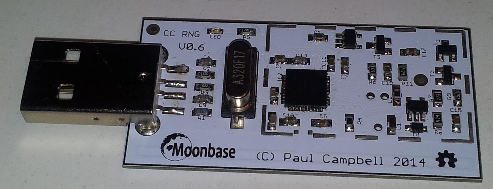

What is the OneRNG?
You rely on a high-quality source of random numbers to maintain your privacy and security in computer communication; but computers have too few sources of truly random data for the demands we place upon them. Increasingly we have been distrusting the solutions given to us by others, as they are shown to be weak in so many ways - because of faults in implementation, in design, or due to subversion by attackers who simply do not care about the consequences of their actions (I'm looking at you, NSA).
The OneRNG is an Open Hardware, Open Source, simple and verifiable source of entropy; we do not ask you to "trust" us, we give you the ability to verify for yourself that the OneRNG does what we claim, and that it does nothing else.
In general usage, we recommend that you use the OneRNG as an entropy source for your operating system's own RNG software; this allows you to consume extremely large quantities of random data without either blocking or reducing the quality of the data.
Verifiable?
- The OneRNG is Open Hardware - you can get the full hardware schematics, you can build your own. You can see the full details of every component that has been used. You can visually check every component on the boards that we supply.
- The OneRNG is Open Source Software - you can see how the firmware is written, you can modify it and use your own version if you prefer - you need a separate programmer unit (also Open Hardware of course) to actually modify the firmware, this cannot be done over the USB connection. Equally, the OneRNG isn't "bad USB" - it cannot be subverted over USB, and it will not attack you over USB.
- The OneRNG is verifiable - you can prove that it does exactly what you expect, and nothing else. You can ask it to dump the current firmware to you, you can see all the components on the board.
- The OneRNG is fail-safe reliable - if it detects instability in the entropy generators, it will stop delivering data and blink the status LEDs.
More Information :
Current State
We have a small number of beta units that have been assembled and programmed by Paul in his own lab, and these have been sent out to a few testers for comment.
The current beta unit is described in detail over at the
Moonbase Otago site.
Here's a photo of it :-

Discussions
Join the OneRNG Talk discussion (sponsored by OnlineGroups.net, thanks!)
Tell us about other approaches to solving these problems, about how we would address your specific use-cases, what features you would like us to consider for future units. If you have built your own unit (whether the OneRNG or any other style of HWRNG) let us know too.
Team Members
- Jim Cheetham — Information Security — Dunedin, NZ — jim@inode.co.nz
- Paul Campbell — Hardware Design — Dunedin, NZ — paul@taniwha.com
 Licences
Licences
Open Hardware (as per the definition at http://www.oshwa.org/definition/) for the actual hardware.
Open Source (GPLv3 and LGPLv3 as per the FSF, http://www.gnu.org/licenses/gpl.html and http://www.gnu.org/licenses/lgpl.html for the system firmware and OS utilities.
Attributions
This website uses icons from The Noun Project http://thenounproject.com. See the img/ directory for the icons and individual licenses.
This website also uses fonts downloaded from Google Fonts (not the versions hosted at Google, in order to preserve your privacy). See the fonts/ directory for details.
The HTML for this website is compiled from less-complex source files, using Template::Toolkit. See the src/ directory for details.
This website is hosted on GitHub Pages.